Don’t forget to rate  if you enjoy the product!
if you enjoy the product!
TheHost
Creative Responsive HTML & WHMCS Professional Clean Latest Web Hosting Trending Template
- Created: 21st September 2017
- Updated: 4th November 2017
- by: SreeThemes
- http://themeforest.net/user/sreethemes
- email: sreenubfa@gmail.com
Thank you for purchasing the TheHost HTML template.
How to get help:
We will respond to buyers' questions via the contact form on our profile.
We run support Weekdays 9am-5pm GMT. You can expect a response within 12 – 24 hours Monday to Friday. We’ll respond to questions outside of these times & weekends occasionally, but please don’t expect a response outside our stated hours.
Support requests are for:
- Help using templates
- Instructions setting up templates
- Bug reports and fixes
Support requests aren’t for:
- Help with 3rd party plugins
- Integration of 3rd party plugins
- Customizations of our templates
Thanks for your purchase!
Included Folders
TheHost-HTML:The main HTML template
WHMCS: ComingSoon
HTML Files
The TheHost template is a responsive HTML template based on Bootstrap 3. The structure based on a flexible grid that lets you change HTML pages quickly and logically with a nestable system.
If you would like to edit the layout of any elements in whole template, you would do the following:
Open the file /style.css, so that is extremely easy to change any css attributes. Simply find the related and commented heading in this css file and make your magic.
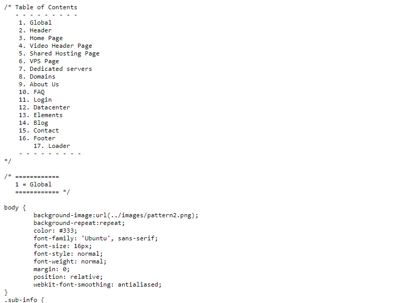
The font for body text is Ubuntu from Google Web fonts and for headings (h1, h2, h3 etc.) is Nunito from Google Web fonts too. If you like to change these fonts with a usual web safe font (arial, verdana etc.) you must remove from <head> section of each page the line
< link href="https://fonts.googleapis.com/css?family=Ubuntu:300,400,500" rel="stylesheet" >
< link href="https://fonts.googleapis.com/css?family=Nunito:400,700,800" rel="stylesheet" >
and also change the font-family class of body in the file /style.css from font-family: 'Ubuntu', Optima, Segoe, "Segoe UI", Candara, Calibri, Arial, sans-serif; to font-family: Verdana; (for example) and the font-family class of h1, h2, h3, h4, h5, h6 in the file /style.css from font-family: 'Nunito', Optima, Segoe, "Segoe UI", Candara, Calibri, Arial, sans-serif; to font-family: Verdana; (for example)
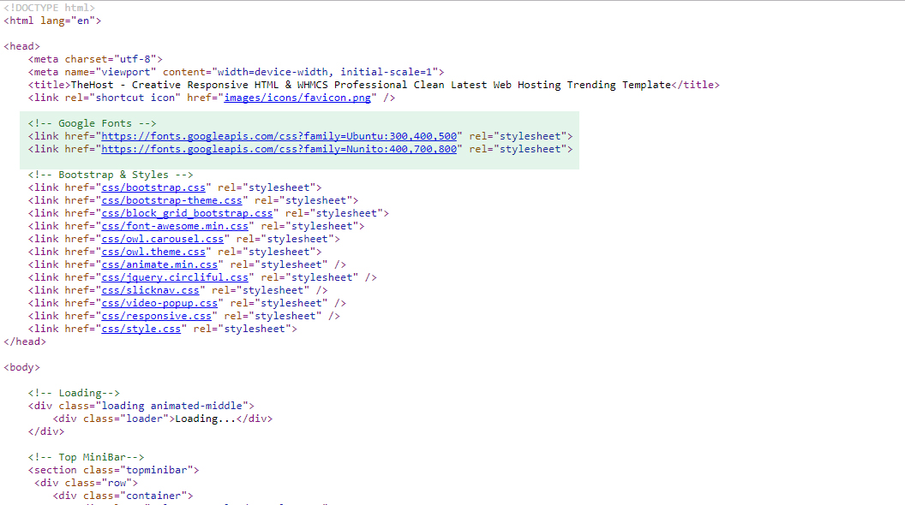
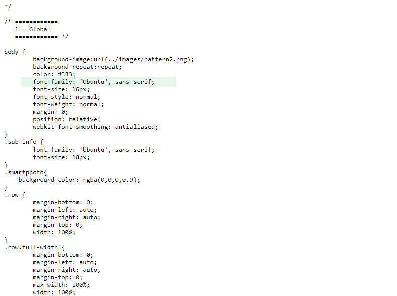
Changelog
Version V.2
Updated on October 7th October 2017----We are releasing Version V.2 with the following:
1. Updated new Version of WHMCS 7.3 Integration.
Version V.3
Updated on October 10th October 2017----We are releasing Version V.3 with the following:
1. Buttons Click Issue Fixed in Mobile
CSS Files
TheHost using the following CSS files:
css/style.css
The main css file
css/animate.min.css
The main library for animation effects that you see on various pages.
css/font-awesome.min.css
The css file for font-awesome icons. To see all the available icons and instructions on how to use them click here
css/bootsrap.css, css/bootsrap-theme.css
The main responsive grid stylesheets, from Bootstrap 3 framework. It is recommended to make any changes/additions to style.css and keep bootsrap.css and bootsrap-theme.css as it are. In this way, you can easily upgrade the grid framework when Bootstrap releases an update.
css/block_grid_bootstrap.css
A custom addition to bootstrap grid. It provides the possibility to create grids with any columns that you want.
css/owl.carousel.css
The base stylesheet for carousels that the template using (testimonials in home page, carousel with fade effect in datacenter page, one item carousel in blog category)
css/owl.theme.css
The stylesheet that define the appearance of carousels. You can change saome things, for examople the color/size of pagination bullets.
css/jquery.circliful.css
The stylesheet for show numbers as Circle Statistics.
css/slicknav.css
The stylesheet for menu on small screens and mobiles.
css/tablesaw.stackonly.css
The stylesheet for responsive tables (exists in dedicated servers page)
css/video-popup.css
The stylesheet for responsive Popup Videos (Youtube and vimeos)
css/smartphoto.min.css
The stylesheet for responsive Photo Gallery
css/qs.slider.css
The stylesheet for Cloud Server Sliders
JS (javascript) files
TheHost using jQuery framework with various additional plugins.
js/bootstrap.min.js
The main js file that hook the supported scripts of Bootstrap 3 framework
form/config.php
The scripts that validates the contact form script in the contact page
js/hoverIntent.js
A helper file that make clickable each main menu options on touch screens.
js/jquery.circliful.min.js
The number counters in home page (a few lovely stats). You can set the options as data attributes and hook the script in the bottom of page (below of jquery)
js/jquery.min.js
The jQuery framework
js/jquery.slicknav.min.js
The menu on small screens and mobiles. The hook of the script exists in js/custom.js file on line 42.
js/jquery.tablesorter.min.js
The script that allows the tables to be sorted. An example is the Domain Price List in Domains page.
js/owl.carousel.min.js
The script for carousels that the template using (testimonials in home page, carousel with fade effect in datacenter page, one item carousel in blog category). The hook of the script for each page exists in js/custom.js file on line 5-30.
js/superfish.js
The main navigation menu script with it submenus. The hook of the script for each page exists in js/custom.js file on line 32.
js/waypoints.min.js
The script that hooks the statistics when the specific section is in viewport. You don't need to touch anything here.
js/jquery-ui.js
The script that using in VPS slider order and creates the handler and the slider experience.
js/tablesaw.stackonly.js
The script that convert the tables to responsive layout in smaller screens.
js/wow.min.js
The script that using for animations (in combination with animate.min.css) while scrolling the page
js/video-popup.js
The script that using for video-popup (Youtube and Vimeos)
js/qs.slider.js
The script that using for CloudHosting Slider
js/jquery.parallax-1.1.3.js
The script that using for Parallax Background Scrolling Animations
js/jquery-smartphoto.min.js
The script that using for Photogallery
js/jquery.counterup.min.js
The script that using for Funfacts Numbers Counters
js/jquery.countdown.js
The script that using for Date and time Counts
js/custom.js
The script that using for Custom jQuery
js/cookie-warn.js
The script that using for Website cookie Message
How to change the colour themes ?
- Open Up your Desired 'themes' file location. (For Example, 'themes/YOURCOLOUR'
- Then Search For the Comment '<!--Bootstrap & Styles-->'
- And remove the markup
<link rel="stylesheet" href="css/style.css">(Remove this)
<link rel="stylesheet" href="themes/color1.css">(Add this)
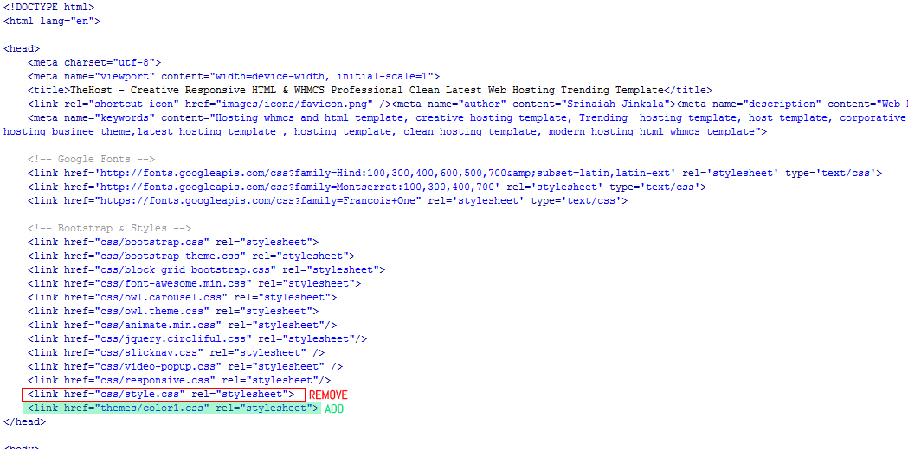
Where i can define the circles with numbers that i see in home page?
You can set the options as data attributes and hook the script in the bottom of page (below of jquery).
An example :
id="myStat1" data-dimension="175" data-animationstep="0.5" data-text="3215" data-width="25" data-fontsize="29" data-percent="64" data-fgcolor="#00e16f" data-bgcolor="#ffffff"
id = used to create the animation when the section is in viewport. Must be different in each stat.
data-dimension = how big or small you need the circle.
data-animationstep = the speed that the color fill the circle
data-text = the number that displaying in the center of the circle.
data-fontsize = the font size of the number that displaying in the center of the circle
data-width = how big or small you need the color that fill the circle
data-fgcolor= the hex code of the color that fill the circle
data-bgcolor= the hex code of the color that used as border on the circle
data-percent= which percent of the circle will stop the color that fill the circle (100 all the circle, 50 the half of circle etc.)
Where i can define the plans, prices etc. that i see in VPS order slider?
1) You can define the plans in the html code (see screenshot below, or see the code in eg: vps-slider-3-plans.html, line 273.
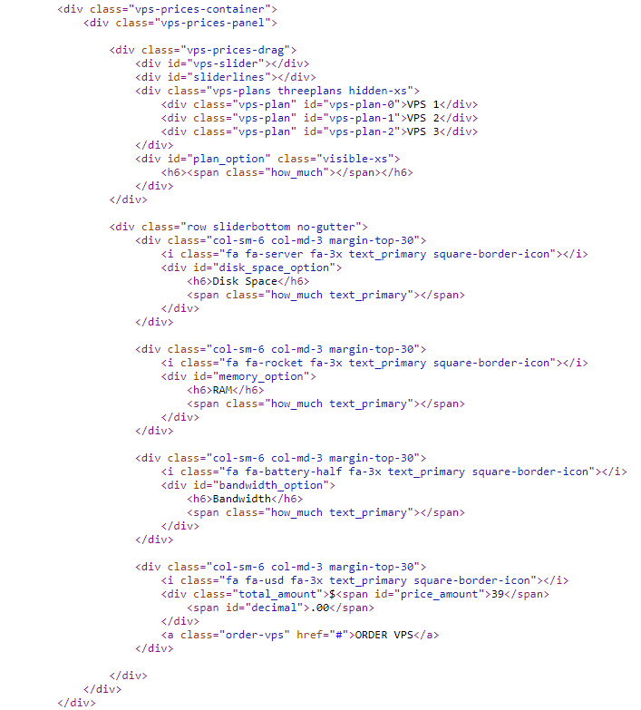
2) You need to define the distance between plans, that exists just below the slider in style.css, lne 2332
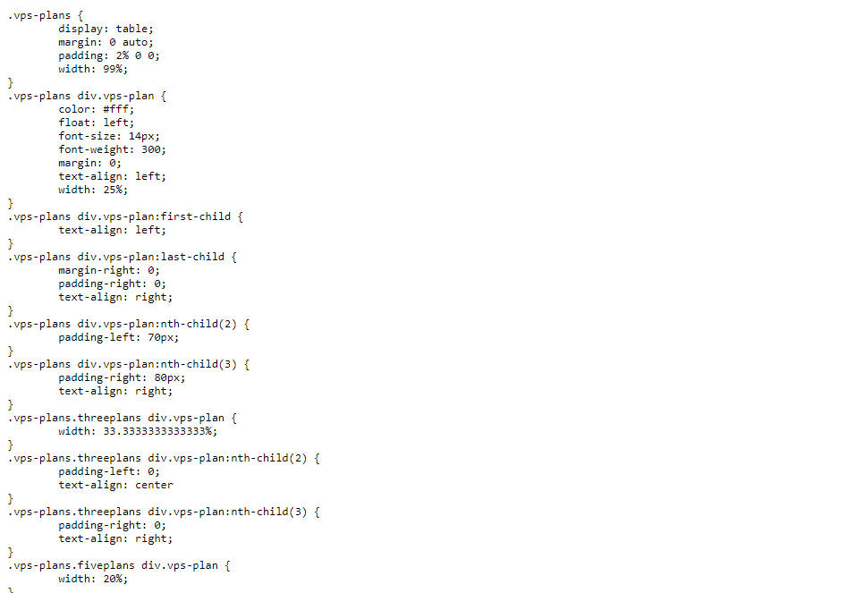
3) Finally you need to define the various values that displaying when you drag the slider handler, in the javascript that exists in the end of the page (vps-plans.html, line 725)
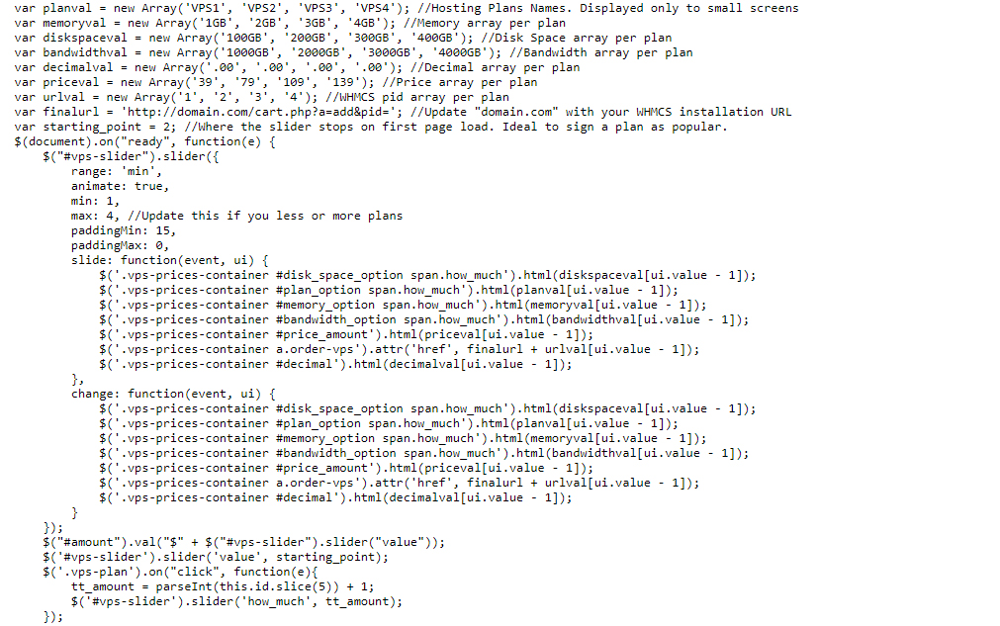
The HTML template includes pages with 4 plans on the slider 3 plans, 4 plans, 5 plans and 6 plans (in the related name html file).
Where i can define the Cloud plans, prices etc. that i see in CLOUD order slider?
Please open js/qs.slider.init.js in any of text editor (recommended Notepad ++) to change slider settings i.e. Pricing, link etc..
To configure preset buttons selected sliders values, For now you need to edit main qs.slider.js
(chnage values in lines 202 - 206) i.e. xs: { cpu: "3", ram: "4", hdd: "10" }, etc..
How can i add animation while scrolling to an item?
You can do this, by using "wow" class and the class for the specific animation.
For example : <div data-wow-delay="0.2s" class="wow zoomIn">
- the "wow" class hooks the animation when the specific div is in viewport
- the "zoomIn" class is the animation effect. You can see the effects taht you can assing here : http://daneden.github.io/animate.css/
- the data-wow-delay="0.2s" is a variable that we can assing to define the time that the specific div displaying.
Where i can define my e-mail account to receive the messages from contact form?
It is in form/config.php, line 6 - 12 ($recipientEmail, $recipientName,$fromEmail,$fromName)
I have purchased the video that i show in preview from VideoHive. Now?
Just save the 3 video formats (mp4, ogv, webm) that you found in video zip in the /video folder, and update the paths(source src=) in index3.html,index4.html that start on line 210.
How to remove the top menu sticky as scrolling?
Just go to js/custom.js Line Number 125 (remove the STICKY PLUGIN Script and also remove the related file from js/jquery.sticky.js
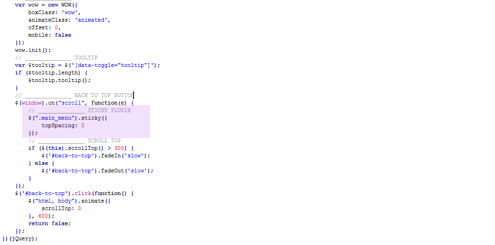
How to integrate with Mailchimp?
- login to your mailchimp account, create a list, go to signup forms of this list, choose embedded forms.
- There, mailchimp has a textarea with the embedded code that you need to put on your site.
- Just copy the form action url (see screenshot). Open the files in the template and paste the action url where is mine. (change it).
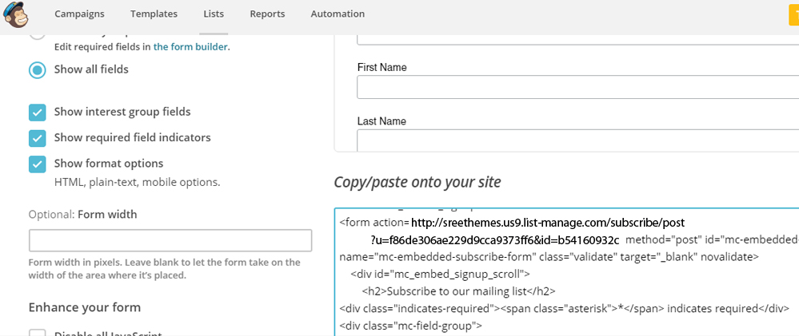
How to disable the onscroll animations?
- Just remove the wow.js script from pages and also remove the related hook from js/custom.js
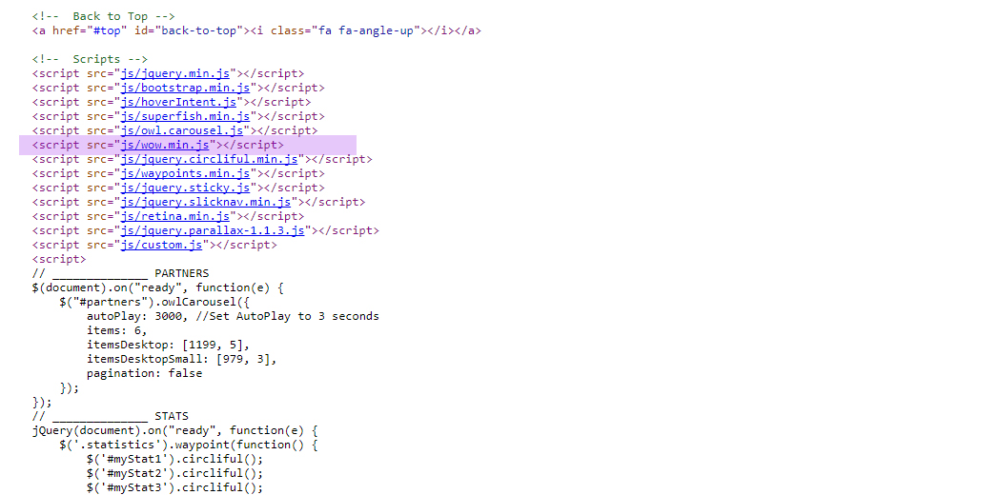
Just go to js/custom.js Line Number 105 (remove the ANIMATE EFFECTS Script
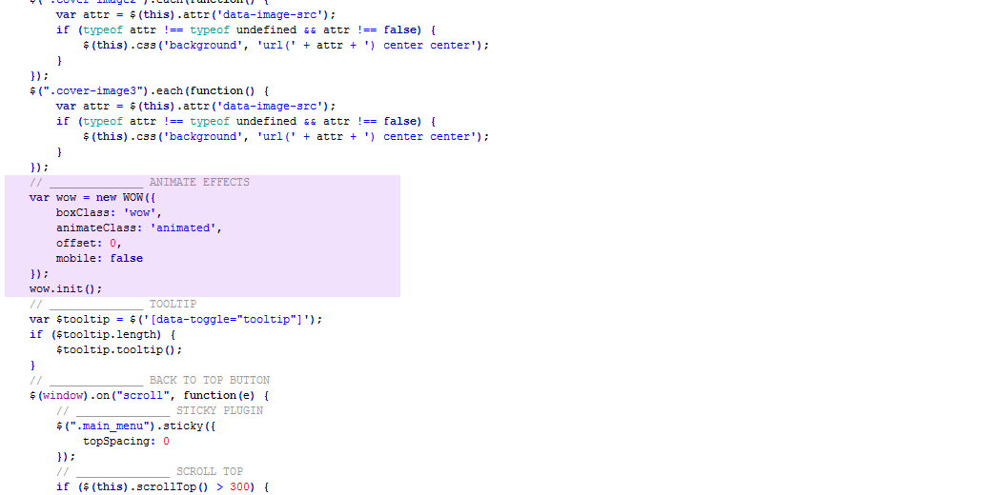
Where i can find the icons that i see in the demo?
You can download them from :
http://fontawesome.io/icons/
How to install WHMCS Template ?
You can download "thehostwhmcs"
1. Upload the "thehostwhmcs" folder to your WHMCS Folder /templates
2. Activate "thehostwhmcs" Template from WHMCS Admin Panel Setup
3. Refresh the Client Area
How to change the WHMCS color theme ?
You can download "thehostwhmcs"
If u want to appply WHMCS "thehostwhmcs" specific color style. Just go to "hostrwhmcs/includes/head.tpl" change location and upload.
Default:
< link href="{$WEB_ROOT}/templates/{$template}/css/custom.css" rel="stylesheet" >
Your Style :
< link href="{$WEB_ROOT}/templates/{$template}/css/colors/color1.css" rel="stylesheet" >
To update the WHMCS template Header and footer, Open header.tpl and footer.tpl inside /thehostwhmcs folder and edit accordingly. All the css overrides to default WHMCS six template are in css/custom.css file.
You can also copy paste from the HTML page to match with your website and update the links.
If you like to rename WHMCS template folder name, just use only letters and numbers (according to WHMCS). All orderforms automatic change thehost theme related.
For example "myhost" is OK. But "my-host" is not OK (WHMCS will be unable to see the specific template in admin).
If u want to appply WHMCS "thehostwhmcs" specific color style. Just go to "hostrwhmcs/includes/head.tpl" change location and upload.
Version V.2
How to update WHMCS 7.3 ?
Step1 : Please take backup your "thehostwhmcs" template folder
Step2 : Take saparate backckup "header.tpl, footer.tpl"
Step3 : Download "thehostwhmcs" updated V.3 file
Step4 : Upload to WHMCS ftp location "thehostwhmcs"
Step5 : Lst step upload (Overwrite existing backup files) "header.tpl, footer.tpl"
Your WHMCS 7.3 successfully Updated..Version V.3
How to update Version V.3 ?
Step1 : Please remove JS File Page Botoom Link.
< script src="js/mawbutton.js"></script>
Step2 : Please Delete file located in "js/mawbutton.js"
Step3 : Please Remove CSS styles located in "css/style.css" line No.3543 to 3575.
/* Button Click Effect ----------------------- */
.mawbutton {
outline: none;
overflow: hidden;
position: relative;
-moz-user-select: none;
-khtml-user-select: none;
-webkit-user-select: none;
-o-user-select: none;
}
.mawbutton .mawbutton-ripple {
position: absolute;
border-radius: 100%;
width: 0px;
height: 0px;
background: rgba(248,248,255, .2);
transition: all 150ms ease-out;
-webkit-transition: all 150ms ease-out;
-moz-transition: all 150ms ease-out;
-o-transition: all 150ms ease-out;
}
.mawbutton .mawbutton-ripple-out {
background: rgba(248,248,255, .0);
transition: background 150ms ease-out opacity 150ms ease-out;
-webkit-transition: background 150ms ease-out opacity 150ms ease-out;
-moz-transition: background 150ms ease-out;
-o-transition: background 150ms ease-out;
}
.mawbutton .mawbutton-stop {
-webkit-transition: none !important;
transition: none !important;
}
Step4 : Please Remove Script located in "js/custom.css" line No.50 to 57.
// ______________ BUTTON ANIMATION
$('button,.btn,input.btn').mawbutton({
speed : 250, // The duration which are given in milliseconds of effect.
scale : 6, // The size how the ripple will scale to in animation.
effect : "ripple", // ripple only in this version
transitionEnd:function(){ // callback when transition ends.
console.log('end');
}
});
Step5 : Please Remove CSS styles WHMCS Folder located in "thehostwhmcs/css/custom.css" line No.3469 to 3499. Also Remove other colors css styles "color1.css to color10.css"
/* Button Click Effect ----------------------- */
.mawbutton {
outline: none;
overflow: hidden;
position: relative;
-moz-user-select: none;
-khtml-user-select: none;
-webkit-user-select: none;
-o-user-select: none;
}
.mawbutton .mawbutton-ripple {
position: absolute;
border-radius: 100%;
width: 0px;
height: 0px;
background: rgba(248, 248, 255, .2);
transition: all 150ms ease-out;
-webkit-transition: all 150ms ease-out;
-moz-transition: all 150ms ease-out;
-o-transition: all 150ms ease-out;
}
.mawbutton .mawbutton-ripple-out {
background: rgba(248, 248, 255, .0);
transition: background 150ms ease-out opacity 150ms ease-out;
-webkit-transition: background 150ms ease-out opacity 150ms ease-out;
-moz-transition: background 150ms ease-out;
-o-transition: background 150ms ease-out;
}
.mawbutton .mawbutton-stop {
-webkit-transition: none !important;
transition: none !important;
}
Version V.4
How to update WHMCS 7.4.1
Step1 : Please take backup your "thehostwhmcs" template folder
Step2 : Take saparate backckup "header.tpl, footer.tpl"
Step3 : Download "thehostwhmcs" updated V.3 file
Step4 : Upload to WHMCS ftp location "thehostwhmcs"
Step5 : Lst step upload (Overwrite existing backup files) "header.tpl, footer.tpl"
Your WHMCS 7.3 successfully Updated..